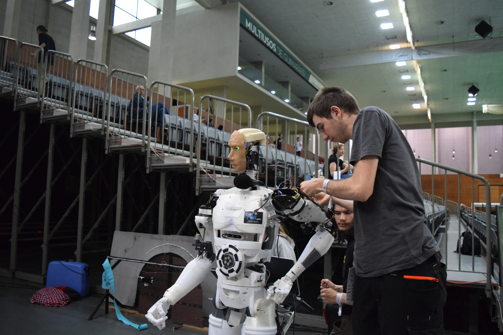
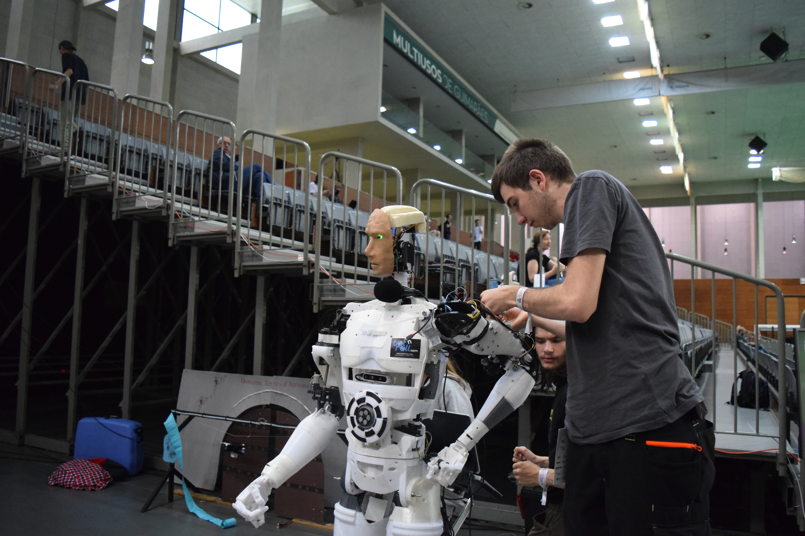
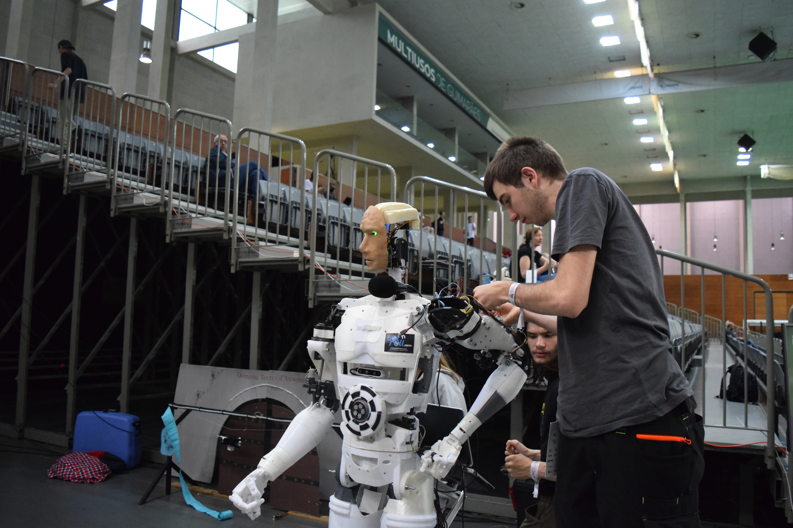

the ability of a digital computer or computer-controlled robot to perform tasks commonly associated with intelligent beings. The term is frequently applied to the project of developing systems endowed with the intellectual processes characteristic of humans, such as the ability to reason, discover meaning, generalize, or learn from past experience. Since the development of the digital computer in the 1940s, it has been demonstrated that computers can be programmed to carry out very complex tasks—as, for example, discovering proofs for mathematical theorems or playing chess—with great proficiency. Still, despite continuing advances in computer processing speed and memory capacity, there are as yet no programs that can match human flexibility over wider domains or in tasks requiring much everyday knowledge. On the other hand, some programs have attained the performance levels of human experts and professionals in performing certain specific tasks, so that artificial intelligence in this limited sense is found in applications as diverse as medical diagnosis, computer search engines, and voice or handwriting recognition..
History of AI
1940-1960: Birth of AI in the wake of cybernetics
The term "artificial intelligence" was introduced in 1956. In the 1950s, several scientists and mathematicians developed the first AI programs—first by Allen Newell, J. C. Shaw, and Herbert Simon at Stanford University in California (1956), then at Dartmouth College in New Hampshire (1957), and MIT's Lincoln Lab (1960). These early experiments involved logic tasks such as theorem proving or semantic networks that have been generalized to other areas over time.
In the 1950s, IBM's Deep Blue beat Garry Kasparov in Chess. The IBM computer was a combination of hardware and software that could destroy human players at checkers (a board game in which players must alternate placing their pieces on squares). The first chess-playing computer program was developed by researchers Edward Feigenbaum and Stuart Card in 1965. They published it as "Chess-playing Program for Electronic Digital Computer" in their paper "Computer Games: A Survey of Experimental Research and Development"
In 1966, the first computer to play a game against a human was developed by William Lucas Jr., who used an Unimate industrial robot arm coupled with his programming language called IEC 1962; this machine became known as Deep Thought because its processing speed was so fast that it required only two seconds per move (compared with twenty minutes for humans). It won every match played against humans until 1973 when John McCarthy designed his program called ELIZA—based on earlier work by Joseph Weizenbaum—which used Bayesian inference rather than brute force intelligence; ELIZA successfully competed against human opponents until 1974 when it lost again due mainly to its inability to handle messy real-life situations..
The 1960s and 1970s were the first "AI winters."
During these years, researchers focused on building systems that could recognize images or perform tasks such as playing Chess or translating languages. But these early attempts failed to meet their expectations. They often did worse than humans! For example: In an interview with The New Yorker in 1968 (and later published in Prentice Hall's Artificial Intelligence), MIT professor Marvin Minsky said that it would take another 30 years before computers could pass human tests at reading comprehension—and even then it would be a struggle for AI systems to learn much more than basic arithmetic calculations!
1980-1990: Expert Systems
Expert systems are computer programs that emulate the decision-making abilities of a human expert: they use the results of human experts' decisions to make their own. They were used in many industries, including medicine and law, but their most well-known application was engineering.
In 1980, John McCarthy created an artificial intelligence (AI) research group at MIT called Project MAC (MULTiple ALgorithmic Computer). This project aimed to develop an AI system capable of solving "expert systems" problems—those where you need to make complex decisions based on incomplete data or limited information. One such example would be deciding which car should be purchased based on its price range; another might involve choosing one brand over another based on its reputation for reliability and durability over time.
AI From 2000-2010
AI has been a hot topic in the 2000s. In 2002, Google released its first search engine that could understand user queries and return relevant results. The company also created its speech recognition system, which allowed it to convert spoken words into text using machine learning techniques.In 2005, IBM Watson was introduced as an automated expert system capable of answering questions posed by humans via natural language processing (NLP). By 2010 artificial intelligence had become an essential part of our daily lives—we used it for everything from booking flights to cooking dinner.
AI 2010-Present Day
AI is now being used in many industries. It's used to give birth to artificial intelligence, which is the ability to make the decisions based on data rather than instinct or intuition. In other words, it can learn through experience and improve over time—and sometimes with human input (like teaching your assistant how to make coffee). AI is also being used for facial recognition and voice transcription; translation between languages; autonomous vehicles (cars that drive themselves); drones (remote-controlled flying machines); robotics/robotics assistants that assist people with daily tasks like cleaning up after meals or taking out the trash at home.
Gallery

The AI does not hate you, nor does it love you, but you are made out of atoms which it can use for something else.
- John Keats
The measure of Intelligence is the ability to change.
- Albert Einstein
Real Stupidity beats artificcal intelligence every time.
- Terry Pratchett
Ai is A Tool The Choice About How It Gets Deployed Is Ours.

 
